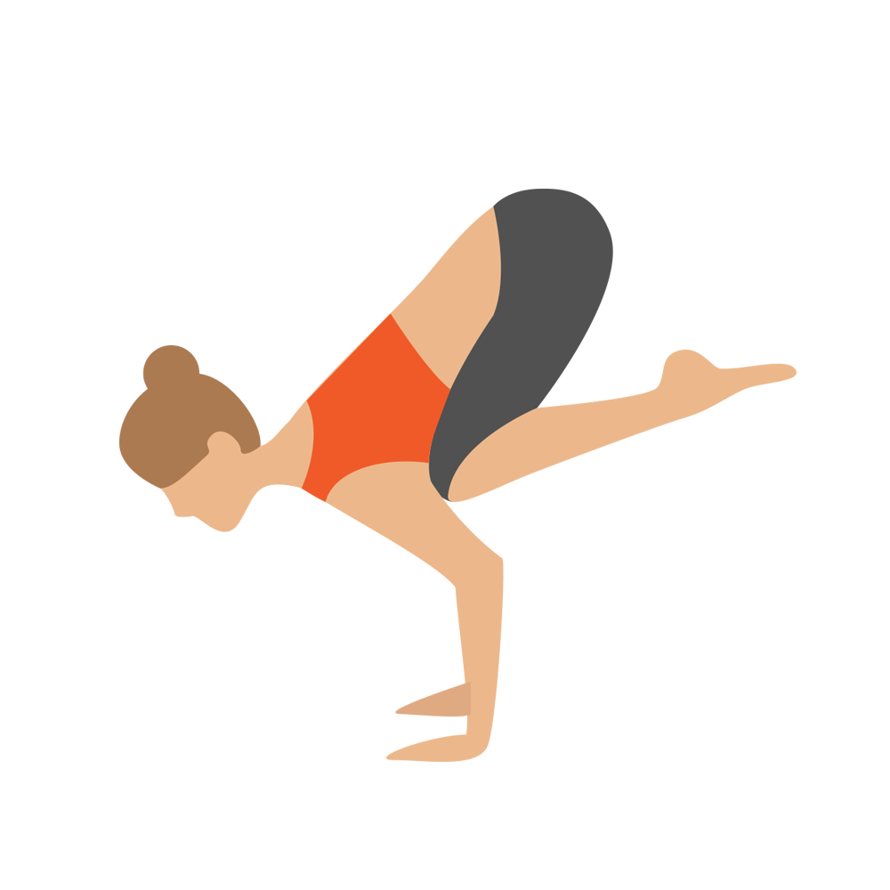

Crow – Bakasana

Crow Pose is often the first arm balance that yoga students tackle. Though it looks like it's all about arm strength, the keys are actually learning where your center of gravity is and how to distribute your weight so that you can balance.
The biggest hurdle to overcome is usually a reluctance to move enough of your weight forward into your hands. When you find that sweet spot, the feet just pop off the floor almost on their own.
Benefits
Crow Pose strengthens the wrist, forearms, and abdomen while stretching your upper back. It improves balance and core strength. Mastering Crow builds your yoga confidence and opens the door to many more poses involving arm balance. You will improve your awareness of where your body is in space and enhance your body control.